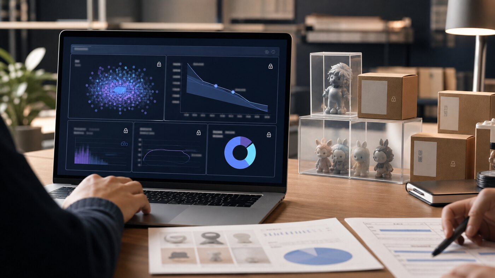

Demand and allocation decisions
A market-entry track for pre-launch demand, price sensitivity, and allocation decisions without exposing raw responses.
PET Business Vision
waLLLnut expands one FHE16-based PET engine into B2C demand intelligence, B2B risk intelligence, and blockchain confidential infrastructure.
PET Engine
waLLLnut combines FHE16, MPC, and threshold disclosure so sensitive data can be computed without moving raw records.

A market-entry track for pre-launch demand, price sensitivity, and allocation decisions without exposing raw responses.
PET-based risk intelligence for cross-checking insurance, identity, account, and transaction patterns without moving source data.
The long-term expansion track connecting encrypted state, public verification, and selective disclosure to blockchain execution.
PET Landscape
TEE is easy to start with, but it requires trust in hardware and operators. Cryptographic PET is harder to implement, but separates raw data and computation more strongly.
The barrier is low, so many teams can build a PoC quickly. Differentiation is limited, and trust remains with the hardware vendor and operating environment.
MPC, PSI, PIR, ZK, FHE, and iO belong here. iO and FHE are especially hard to implement; iO remains outside practical product use, while optimized FHE can move into practical ranges.
Multiple parties compute one result while hiding each party's input.
Find only overlapping customers, accounts, or events without revealing the rest.
Let a user retrieve data without the server learning which item was requested.
Prove a condition is satisfied without revealing the underlying secret.
Difficult to implement, but integer arithmetic, bootstrapping, SIMD, and threading optimizations can bring it toward practical latency.
Conceptually powerful, but not practical yet for product workloads.